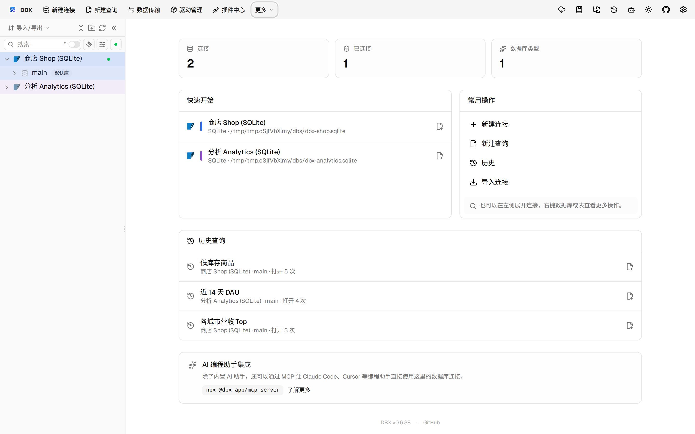
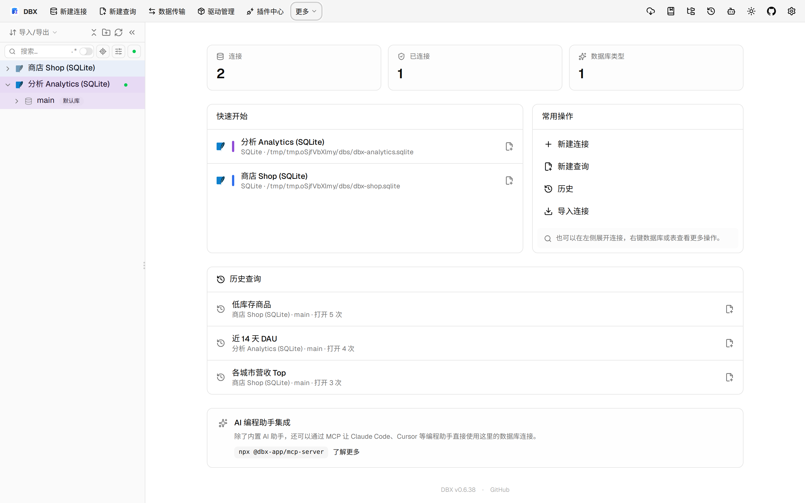
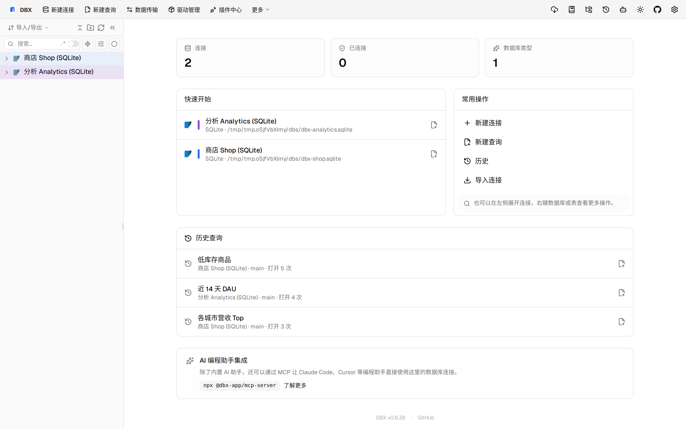

#11558 界面预览
commit 8b62004 · 回到 PR · 新增了 Oracle/OceanBase Oracle 的调度作业管理页，并把它接入到连接侧栏菜单与内容区标签页中。页面支持查看 Scheduler/旧式 DBMS_JOB、预览创建/编辑/启用/禁用/删除，以及在预览里单独展示计划影响。
⚠️ 这次录制有 19 步没能按计划执行；带 ⚠️ 的截图拍摄于步骤失败之后，画面未必是说明文字所描述的状态。
红线是鼠标走过的轨迹，红色圆环是一次点击；底部文字是这一步在做什么。多个场景各自从应用初始状态开始。空格暂停，← → 逐段查看。

⚠️ 从连接菜单打开调度作业页 · 打开调度作业页后的界面
 ⚠️ 查看作业详情与旧式作业 · 作业列表与旧式 DBMS_JOB 分区
⚠️ 查看作业详情与旧式作业 · 作业列表与旧式 DBMS_JOB 分区

⚠️ 查看作业详情与旧式作业 · 作业详情、启用/禁用/删除按钮与读回信息

⚠️ 预览计划影响 · 预览弹窗中单独显示计划影响与旧下次运行时间